| 日付 | 2012年9月16日（日） |
|---|---|
| 山域 | 越後 |
| メンバー | 家族（妻、長女・1歳） |
| 山行形態 | 子連れ日帰り |
| アクセス | 車 |
| ルート (Map) | 桜坂駐車場 (7:43) - (9:05) ヌクビ沢出合 - (11:56) 稜線 - (12:17) 巻機山 (12:48) - (12:57) 本当の山頂 - (13:05) 巻機山 - (13:34) 前巻機 - (14:30) 六合目 (14:42) - (15:47) 桜坂駐車場 |
以前巻機山に登った時に歩けなかった道で、どうしても歩いてみたい道があった。
ヌクビ沢を詰めて巻機山に至る沢沿いの道である。
体力的にも技術的にも困難な道ではあるが、残雪の心配がない秋晴れの一日を選んで
3年ぶりに巻機山を再訪してみることにする。
今日の予報では北に行くほど天気が良い。
上空はきれいな青空だが、下界には霧が出ている。
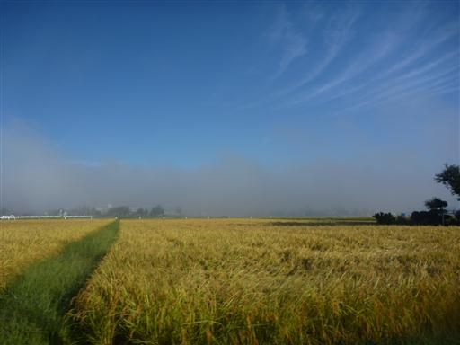
桜坂駐車場に到着。標高730m。
駐車場はすでに一杯で道路の脇に車を停める。
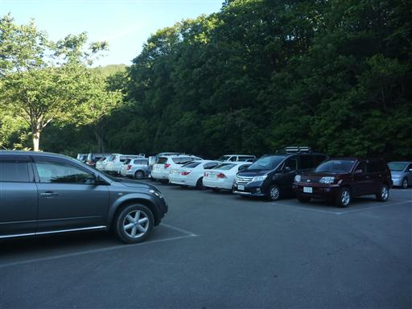
駐車場からは天狗岩と、その背後に割引岳が望める。
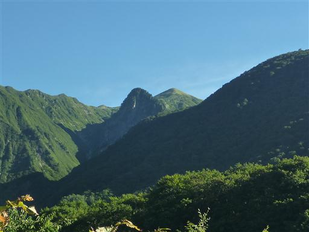
井戸尾根コースと分けてヌクビ沢コース方面に足を踏み出す。
左手に人気のない小屋が何軒か見えている。
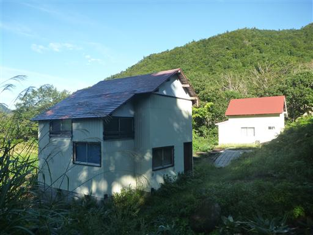
こちらの道は歩く人が少ないのか、少々藪がうるさい。
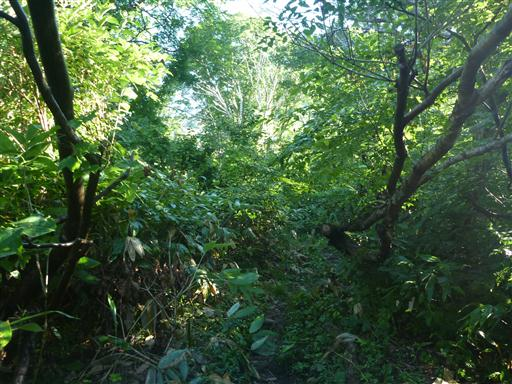
巻道との分岐点に到着。右は積雪期や緊急時の避難道だ。
今回は左手の沢に下りる道に進む。
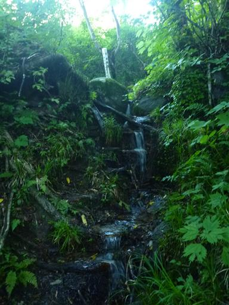
割引沢に下り立つ。真白な巨岩が折り重なっている。
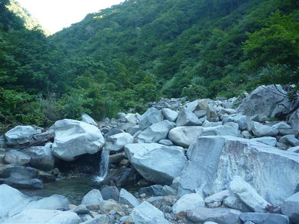
ところどころ左手に藪に導く赤矢印が出てくる。
沢を歩けるところは赤矢印を気にせずに進んでいく。
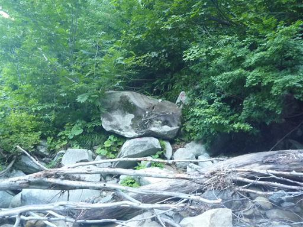
危険なところには鎖やロープが張られている。

途中で沢から離れて高巻道を歩く。足元の白い沢が美しい。
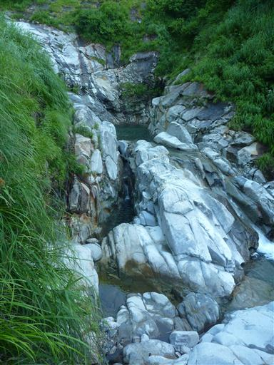
振り返ると大源太山の鋭いピークが天を突いている。
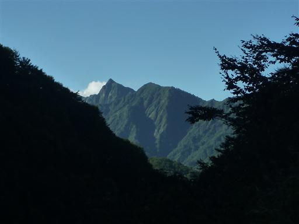
沢が大きく広がったところで巻道から沢に下りることにする。
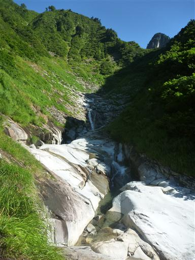
白い一枚岩の小さな溝を水が静かに流れている。
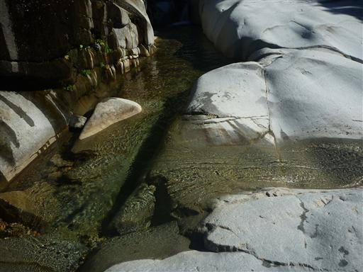
歩きやすそうなところを選んで適当に登っていく。
左手には吹上の滝が見えている。
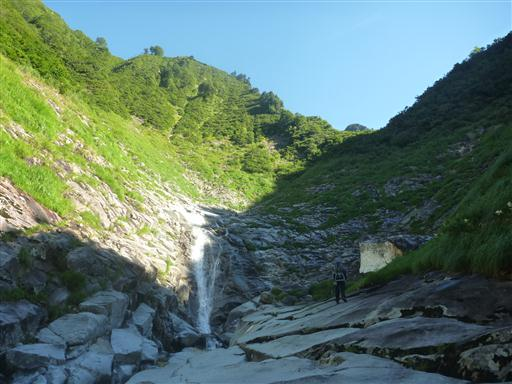
一箇所だけわずかに残雪が残っている。
わずかといっても高さ2mを超す巨大な雪のブロックだ。
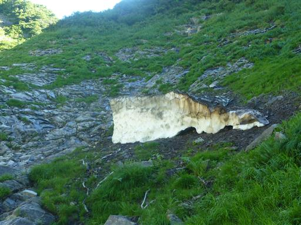
続いてアイガメの滝が現れる。落差40mの立派な滝だ。
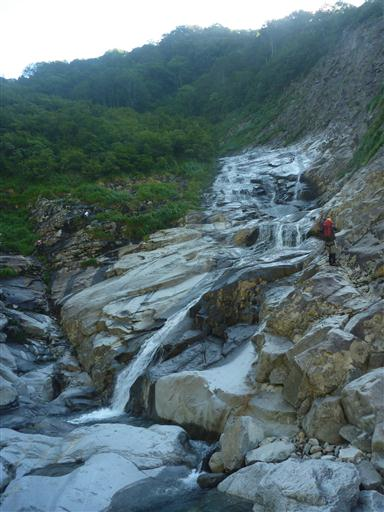
左から回り込んで滝の右岸をロープを頼りに登っていく。
この辺りの岩は滑りやすく危険なところだ。
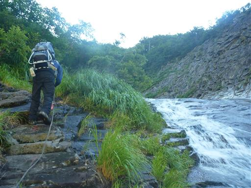
登山道のすぐ傍では沢登りをしている人がいる。
滝の上を直接登るのは楽しそうだ。
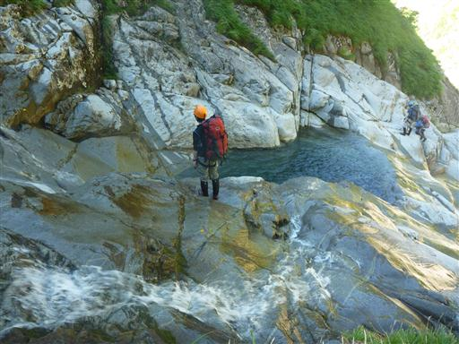
滝を超えても沢は続き、足元には常にきれいな水が流れている。
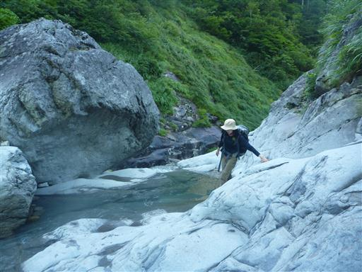
天狗岩が目の前に見えてきた。
足元には大きな石が転がっていて、それを乗り越えながら進んでいく。
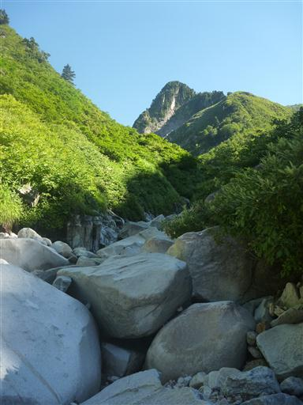
ヌクビ沢コースと天狗尾根コースの分岐点に到着。
大きな岩に赤いペンキでルートが記載されている。
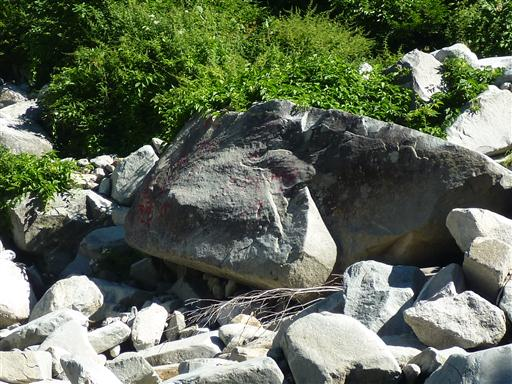
ヌクビ沢方面に入っていくとすぐに布干岩が現れる。
真白な一枚岩で非常に美しい。岩の上を登っていく。
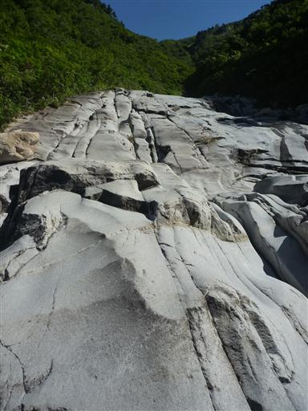
水は岩の右の方に溝を作って流れている。
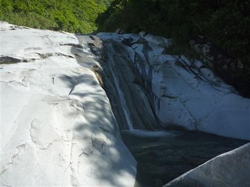
白い河原の道は続く。
登っている途中で両足のふくらはぎをつってしまう。
大股で岩を乗り越えながら登って来たのが良くなかったようだ。
痛いので小股で少しずつ登っていく。
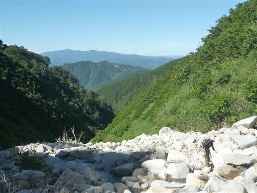
行者の滝に到着。水量はあまり多くない。
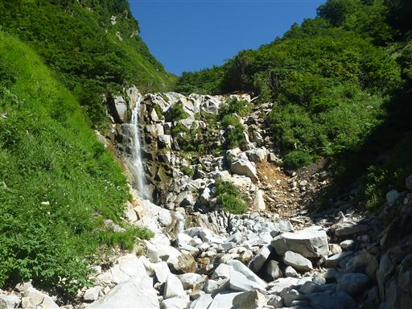
滝の右側を登っていく。遠くから見ると垂直に見えたが案外登りやすい。
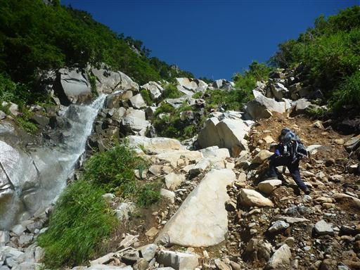
滝を超えるとしばらく沢から離れて高巻道を歩く。
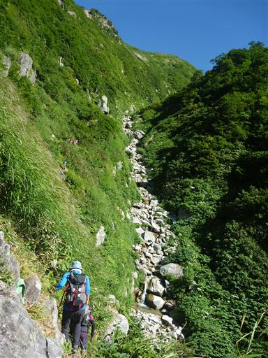
高巻道から沢に下りてくるところは足場がなく、手でつかまるものもなく非常に危険。
先行者がハンマーで土を掘って足場を作ってくれた。
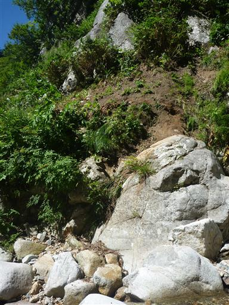
沢に下りたところで腰を下ろして少し休憩する。
ここからは谷川連峰の眺めが良い。

ヌクビ沢を詰めていく。ここまでくると沢はかなり細くなり水量は少なくなる。
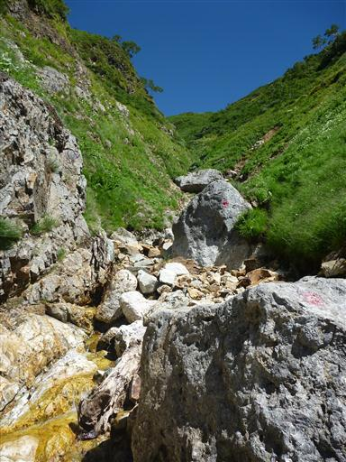
大きな赤矢印が現れる。ここから沢を離れて最後の登りだ。
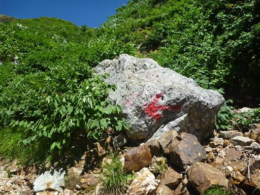
この道が非常に急斜面。手を使いながら登っていく。
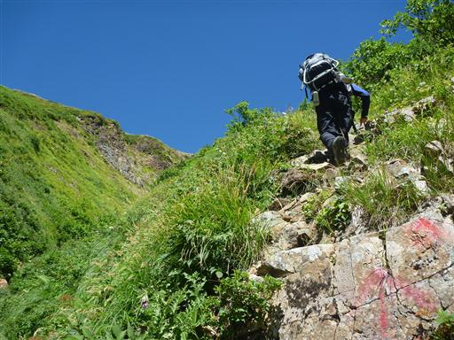
しばらく登ると巻機山の稜線が見えてくる。
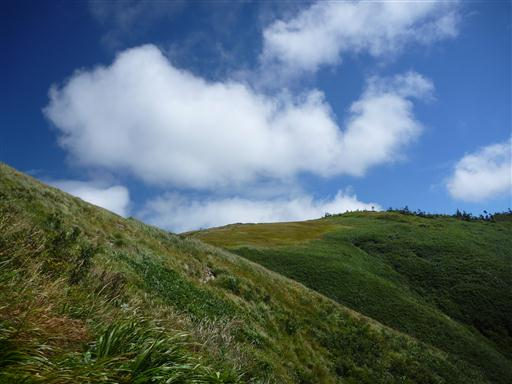
遂に巻機山の稜線にたどり着く。
ヌクビ沢とは打って変わってゆったりとした景色が広がっている。この辺りはもう秋色だ。

ここで初めて北の展望が広がる。越後三山が良く見えている。
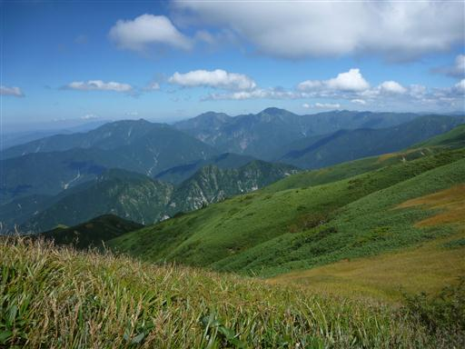
歩いてきた道を振り返る。細い踏み跡があるのみで標識もない。
ヌクビ沢コースは登り専用なので、こちらから下ることはできない。
ここから割引岳まではあとわずかだが、疲れたので割引岳はスキップし巻機山に歩を進める。
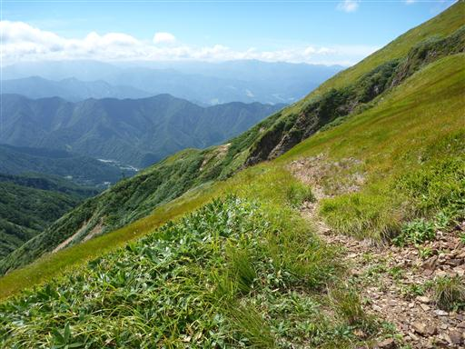
ここから巻機山まではあとわずか。美しい景色を眺めながらのんびりと歩いていく。
稜線に着いたら登山者が増えるかと思ったら、案外歩いている人は少ない。
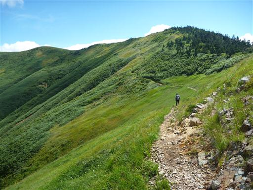
振り返ると三角形の割引岳がすぐ近くに見えている。
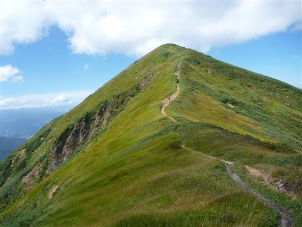
巻機山山頂に到着する。残念ながら雲が出てきた。
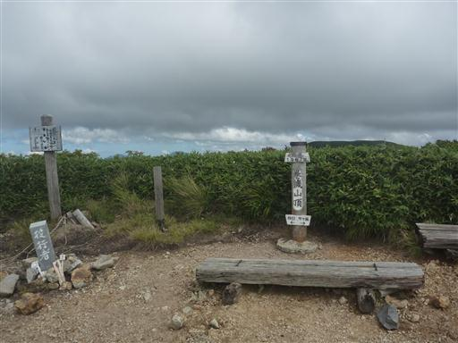
ここで腰を下ろして昼食休憩をとる。時間が遅いからか山頂もあまり人影は多くない。
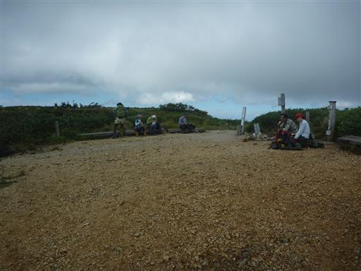
巻機山の山頂標識は山頂ではない謎な場所に立っているため、本当の山頂まで足を延ばす。
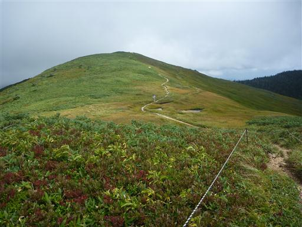
本当の山頂。小さなケルンが積まれているが標識の類は見当たらない。標高1967m。
登山道から少し外れたところの方が標高は高そうだが、ロープがあって立ち入ることはできない。
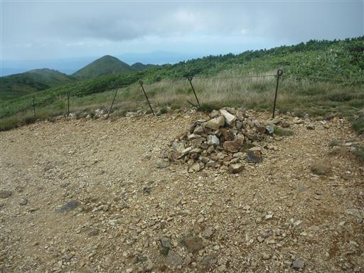
山頂標識のところまで戻って井戸尾根コースを下山する。
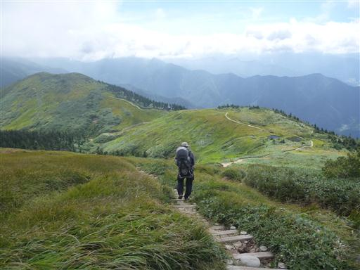
この辺りには池塘が点在していて木道が設置されている。
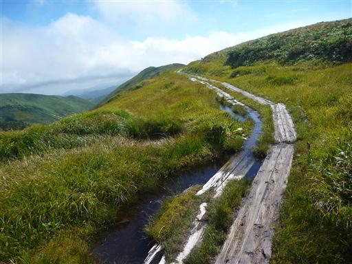
池塘にはオタマジャクシが住んでいる。冬を越せるのだろうか？
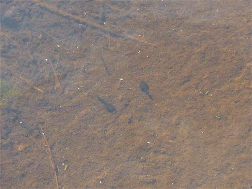
巻機山避難小屋に到着。3年前にお世話になった小屋だ。
今日は比較的賑わっている。
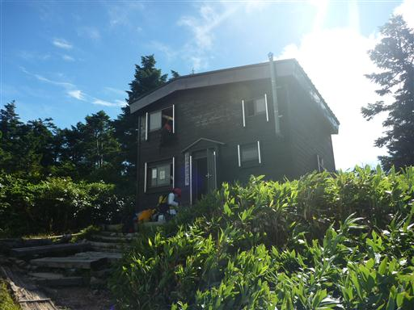
下山道中の唯一の登りを登ってニセ巻機山に到着する。
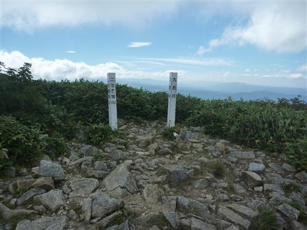
ここからは巻機山の姿が望める。間もなく巻機山山頂も雲に隠されてしまった。
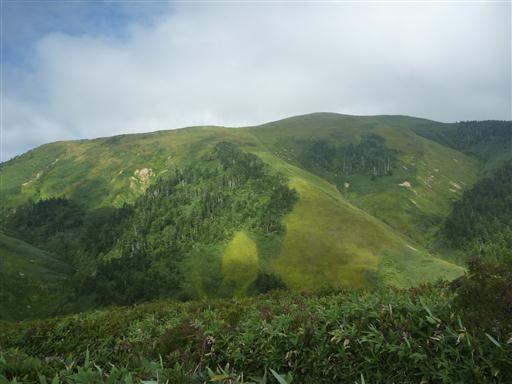
笹原が広がる展望の良い道を下って行く。登りの道と比べると格段に歩きやすい。
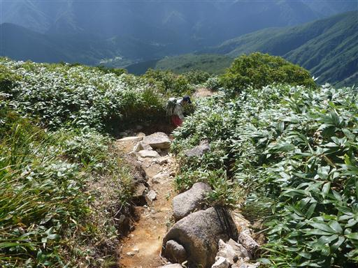
緑に覆われた斜面から、ところどころ白い岩が顔を出している。
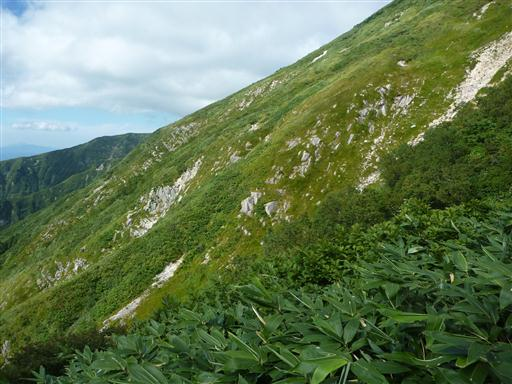
標高を落とすと樹林帯の中に入っていき、展望は失われる。
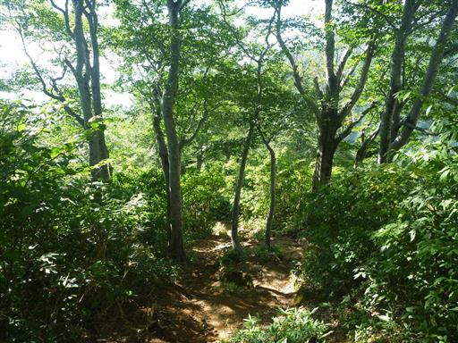
六合目展望台に到着。足元に見える白い沢が登りに使ったヌクビ沢だ。
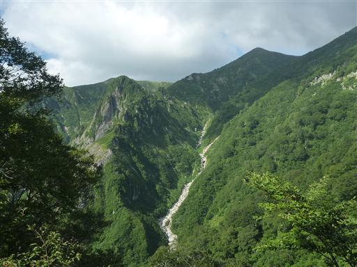
六合目で小休止をとったら、どんどん下って行く。
辺りは美しいブナ林が広がっている。
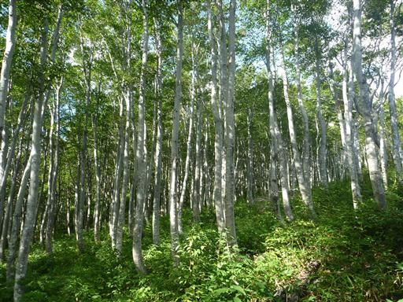
桜坂駐車場に下山。出発の早い人が多かったのか、もうほとんど車は残っていない。
登山道入口にあった入山禁止の看板。入山禁止の前に「初心者の」の落書きが見られる。
この時期になって「雪渓の状況が不安定」とはいい加減な看板だ。
帰りに「さくり温泉健康館」でお風呂と食事をとることにする。
入浴料は370円でタオルは無料貸し出しと良心的だ。食事もおいしかった。
今回の登山は体力的に厳しいコースだったが
美しい沢と雄大な展望を望むことができ、充実した山行だった。